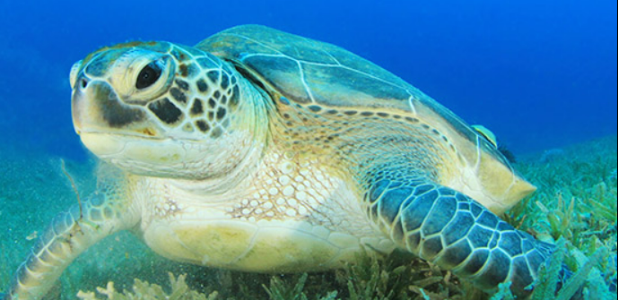

Introduction to the 5 types of turtles
Sri Lanka is home to several species of sea turtles, and these fascinating creatures play a significant role in the country's
coastal ecosystem.
Sea turtles play a crucial role in maintaining the health of marine ecosystems.
They help control populations of seagrass and jellyfish, and their eggs provide nutrients to coastal
dune vegetation. Additionally, their migration patterns contribute to the dispersal of nutrients and maintain
biodiversity in the ocean.
Sri Lanka is known to have five species of sea turtles that frequent its shores. These include the Green turtle,
Loggerhead turtle, Olive Ridley turtle, Hawksbill turtle, and Leatherback turtle. Each species has its unique
characteristics, nesting habits, and conservation status.

The Green turtle is the most commonly sighted sea turtle in Sri Lanka.
They are named after their green-coloured fat, and they can weigh up to 200 kilograms.
The Green turtle can be found in many parts of Sri Lanka, including the southern coast,
the eastern coast, and the west coast. They are herbivores and mainly feed on sea grass and
algae. During the nesting season, female Green turtles come ashore to lay their eggs on the
beaches. Turtle hatcheries have been established in Sri Lanka to protect eggs from predators
and human activities.
The Leatherback turtle is the largest of all sea turtles, and it can weigh up to 900 kilograms.
They are named after their leathery skin, unique among sea turtles. Leatherback turtles are rare
in Sri Lanka and are mainly found in the island's northern waters.

The Olive Ridley turtle is the smallest of the sea turtles found in Sri Lanka. They are named after their
olive-coloured shell and can weigh up to 50 kilograms. The Olive Ridley turtle is a vulnerable species due
to their nesting behaviour. Unlike the Green turtle, Olive Ridley turtles nest in large groups known as
arribadas. This makes them vulnerable to human activities such as beachfront development
and egg poaching.

The Loggerhead turtle is a large sea turtle weighing up to 280 kilograms.
They are named after their large head, which is shaped like a log. The Loggerhead turtle is a critically
endangered species in Sri Lanka due to human activities such as bycatch and the destruction of their nesting
sites.

The Hawksbill turtle is a critically endangered species in Sri Lanka due to their high demand
for their beautiful shell. They are named after their narrow and pointed beak, which resembles a hawk's beak.
Hawksbill turtles can weigh up to 80 kilograms and are found in many parts of Sri Lanka, including the
southern coast, the eastern coast, and the west coast.